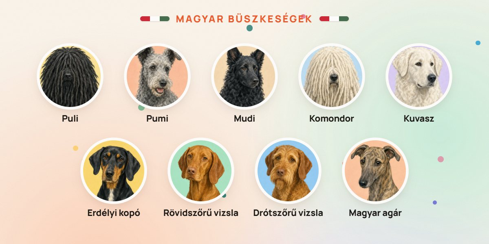

Holnap Állatok világnapja: ünnepeljük a hazai fajtákat! Melyik illik hozzád?͏ ͏ ͏ ͏ ͏ ͏ ͏ ͏ ͏ ͏ ͏ ͏ ͏ ͏ ͏ ͏ ͏ ͏ ͏ ͏ ͏ ͏ ͏ ͏ ͏ ͏ ͏ ͏ ͏ ͏ ͏ ͏ ͏ ͏ ͏ ͏ ͏ ͏ ͏ ͏ ͏ ͏ ͏ ͏ ͏ ͏ ͏ ͏ ͏ ͏ ͏ ͏ ͏ ͏ ͏ ͏ ͏ ͏ ͏ ͏
|
  | új · ingyenes |
|  | Október 4. · Állatok világnapja 9 magyar kutyafajta, akire büszkék lehetünkPásztorok, őrzők, vadászok és egy szélvész. Mindegyiknek megvan a maga története – és a maga gazdija. | Szia Anna! Holnap Állatok világnapja, mi pedig a hazai kedvencekkel ünneplünk. A Pacsiban egyetlen koppintás a Magyar fajta szűrő, és a 124 fajtából csak ők maradnak a felhőben. | Melyik illik hozzád? | 2016 | Tudtad? A pumi Amerikában is befutottAz Amerikai Kennel Klub 2016-ban ismerte el hivatalosan a pumit, azóta a tengerentúlon is egyre ismertebb. |
|
| Mielőtt döntesz Magyar fajtát választanál? Ezt nézd meg előtte✓ | Sok magyar fajta munkakutya: napi 1,5–2 óra mozgás és feladat kell nekik. | ✓ | A nagy őrzőfajták (komondor, kuvasz) tapasztalt gazdit és nagy, jól bekerített udvart kívánnak. | ✓ | Csendes lakótársat keresel? A magyar agár keveset ugat – de futni imád. | ✓ | Keress szűrt szülőktől származó kölyköt (pl. csípőízületi diszplázia), és kérdezd a fajtaklubot. |
|
| A héten a közösségin Nézd meg, ha még nem láttad | Ajánld tovább Ki a legnagyobb magyarkutya-rajongó az ismerőseid között?Küldd el neki ezt a levelet – vagy egyenesen a Pacsit. Egy koppintás a Magyar fajta szűrő, és ott van mind a kilenc. Neked küldték tovább ezt a levelet? Iratkozz fel itt, és csütörtökönként hozzád is megérkezik. |
| Boldog Állatok világnapját! a Pacsi csapata |
| |
|
Pacsi by DarwinAI Ingyenes kutyafajta-választó 124 fajtával · pacsit.hu Azért kapod ezt a levelet, mert feliratkoztál a Pacsi heti kutyás levelére a pacsit.hu-n, vagy partnerként kérted.
Beállítások módosítása · Leiratkozás ARworks Kft. · 1012, Budapest, Várfok utca 3-5. |
|